컴퓨터응용가공산업기사 (2014-05-25 기출문제)
1과목: 기계가공법 및 안전관리
1. 빌트업 에지(bult-up edge)의 발생을 방지하는 대책으로 옳은 것은?
- 바이트의 윗면 경사각을 작게한다.
- 절삭깊이, 이송속도를 크게한다.
- 피가공물과 친화력이 많은 공구 재료를 선택한다.
- 절삭속도를 높이고, 절삭유를 사용한다.
(정답률: 78%)

2. 숏 피닝(shot peening)과 관계없는 것은?
- 금속표면 경도를 높여 준다.
- 피로한도를 높여준다.
- 표면광택을 증가시킨다.
- 기계적 성질을 증가시킨다.
(정답률: 57%)
3. 범용밀링에서 원주를 10° 30 분할할 때 맞는 것은?
- 분할판 15구멍열에서 1회전과 3구멍씩 이동
- 분할판 18구멍열에서 1회전과 3구멍씩 이동
- 분할판 21구멍열에서 1회전과 4구멍씩 이동
- 분할판 33구멍열에서 1회전과 4구멍씩 이동
(정답률: 66%)
4. 연삭에 관한 안전사항 중 틀린 것은?
- 받침대와 숫돌은 5mm이하로 유지해야 한다.
- 숫돌바퀴는 제조 후 사용할 원주속도의 1.5~2배 정도의 안전검사를 한다.
- 연삭숫돌 측면에 연삭하지 않는다.
- 연삭숫돌을 고정 후 3분 이상 공회전 시킨 후 작업을 한다.
(정답률: 72%)
5. 선반작업에서 절삭저항이 가장 적은 분력은?
- 내 분력
- 이송 분력
- 주 분력
- 배 분력
(정답률: 78%)
6. 전해연마 가공의 특징이 아닌 것은?
- 연마량이 적어 깊은 흠은 제거가 되지 않으며 모서리가 라운드 된다.
- 가공면에 방향성이 없다.
- 면은 깨끗하나 도금이 잘 되지 않는다.
- 복잡한 형상의 공작물 연마도 가능하다.
(정답률: 63%)
7. 표면거칠기 표기방법 중 산술평균 거칠기를 표기하는 기호는?
- RP
- RV
- RZ
- Ra
(정답률: 74%)
8. NC 공작기계의 특징 중 거리가 가장 먼 것은?
- 다품종 소량 생산가공에 적합하다.
- 가공조건을 일정하게 유지할 수 있다.
- 공구가 표준화되어 공구수를 증가시킬 수 있다.
- 복잡한 형상의 부품가공 능률화가 가능하다.
(정답률: 62%)
9. 측정기에서 읽을 수 있는 측정값의 범위를 무엇이라고 하는가?
- 지시 범위
- 지시 한계
- 측정 범위
- 측정 한계
(정답률: 80%)
10. 원형의 측정물을 V 블록위에 올려놓은 뒤 회전하였더니 다이얼 게이지의 눈금에 0.5mm의 차이가 있었다면 그 진원도는 얼마인가?
- 0.125mm
- 0.25mm
- 0.5mm
- 1.0mm
(정답률: 60%)
11. 대표적인 수평식 보링머신은 구조에 따라 몇 가지 형으로 분류되는 데 다음 맞지 않는 것은?
- 플로어형( floor type)
- 플레이너형(plainer type)
- 베드형(bed type)
- 테이블형(table type)
(정답률: 48%)
12. 기계의 안전장치에 속하지 않는 것은?
- 리미트 스위치(limit switch)
- 방책(防柵)
- 초음파 센서
- 헬멧(helmet)
(정답률: 86%)
13. 연삭에서 원주속도를 V(m/min), 숫돌바퀴의 지름을 d(mm)이라면, 숫돌바퀴의 회전수(N)을 구하는 식은?
- N=1000d/πd(rpm)
- N=1000V/πd(rpm)
- N=πV/1000d(rpm)
- N=πd/1000V(rpm)
(정답률: 77%)
14. NC밀링 머신의 활용에서 장점을 열거하였다. 타당성이 없는 것은?
- 작업자의 신체상 또는 기능상 의존도가 적으므로 생산량의 안정을 기할 수 있다.
- 기계의 운전에는 고도의 숙련자를 요하지 않으며 한사람이 몇 대를 조작할 수 있다.
- 실제 가동률을 상승시켜 능률을 향상시킨다.
- 적은 공구로 광범위한 절삭을 할 수 있고 공구 수명이 단축되어 공구비가 증가한다.
(정답률: 77%)
15. 바이트 중 날과 자루(shank)가 같은 재질로 만든 것은?
- 스로어웨이 바이트
- 클램프 바이트
- 팁 바이트
- 단체 바이트
(정답률: 65%)
16. 각도 측정을 할 수 있는 사인바(sine bar)의 설명으로 틀린 것은?
- 정밀한 각도측정을 하기 위해서는 평면도가 높은 평면에서 사용해야 한다.
- 롤러의 중심거리는 보통 100mm, 200mm로 만든다.
- 45° 이상의 큰 각도를 측정하는데 유리하다.
- 사인바는 길이를 측정하여 직각 삼각형의 삼각함수를 이용한 계산에 의하여 임의각의 측정 또는 임의각을 만드는 기구이다.
(정답률: 76%)
17. 공구가 회전하고 공작물은 고정되어 절삭하는 공작기계는?
- 선반(Lathe)
- 밀링머신(Milling)
- 브로칭 머신(Broaching)
- 형삭기(Shaping)
(정답률: 82%)
18. 지름 50mm, 날수 10개인 페이스커터로 밀링 가공할 때 주축의 회전수가 300rpm, 이송속도가 매분당 1500mm였다. 이때의 커터날 하나당 이송량(mm)은?
- 0.5
- 1
- 1.5
- 2
(정답률: 51%)
19. 선반작업 시 절삭속도 결정의 조건 중 거리가 가장 먼 것은?
- 가공물의 재질
- 바이트의 재질
- 절삭유제의 사용유무
- 컬럼의 강도
(정답률: 71%)
20. 연삭숫돌의 입자 중 천연입자가 아닌 것은?
- 석영
- 코런덤
- 다이아몬드
- 알루미나
(정답률: 77%)
2과목: 기계설계 및 기계재료
21. 다음 담금질 조직 중에서 경도가 가장 큰 것은?
- 페라이트
- 펄라이트
- 마텐자이트
- 트루스타이트
(정답률: 88%)
22. 텅스텐(W)은 우리나라의 부존자원 중 순도나 매장량의 면에서 가장 중요한 금속이다. 다음 중 텅스텐의 용도에 적합하지 않은 것은?
- 초경합금공구
- 필라멘트
- 연질자성재료
- 내열강 합금재료
(정답률: 60%)
23. 다음 담금질 조직 중에서 용적변화(팽창)가 가장 큰 조직은?
- 펄라이트
- 오스테나이트
- 마텐자이트
- 솔바이트
(정답률: 70%)
24. 탄소강이 공석 변태할 때 펄라이트 조직량이 최대가되는 탄소함량(%)은?
- 0.2
- 0.5
- 0.8
- 1.2
(정답률: 72%)
25. 다음 중 철강표면에 알루미늄(Al)을 확산 투입시키는 방법에 해당하는 것은?
- 세라다이징
- 크로마이징
- 칼로라이징
- 실리코나이징
(정답률: 74%)
26. 철에 탄소가 고용되어 α철로 될 때의 고용체의 형태는?
- 침입형 고용체
- 치환형 고용체
- 고정형 고용체
- 편석 고용체
(정답률: 77%)
27. 냉간 가공과 열간 가공을 구별할 수 있는 온도를 무슨 온도라고 하는가?
- 포정 온도
- 공석 온도
- 공정 온도
- 재결정 온도
(정답률: 85%)
28. 철의 동소체로서 A3변태와 A4변태 사이에 있는 철의 조직은?
- α - Fe°
- β - Fe°
- γ - Fe°
- δ - Fe°
(정답률: 62%)
29. 땜납(solder)의 합금원소로 주로 사용되는 것은?
- Sn-Pb
- Pt-Al
- Fe-Pb
- Cd-Pb
(정답률: 68%)
30. 탄화텅스텐(WC)을 소결한 합금으로 내마모성이 우수하여 대량생산을 위한 다이 제작용으로 사용되는 재료는?
- 주철
- 초경합금
- 합금 공구강
- 다이스강
(정답률: 63%)
31. 사각형 단면(100mm×60mm)의 기둥에 1N/mm2 압축응력이 발생할 때 압축하중은 약 얼마인가?
- 6000 N
- 600 N
- 60 N
- 60000 N
(정답률: 70%)
32. 웜을 구동축으로 할 때 웜의 줄 수를 3, 웜 휠의 잇수를 60이라고 하면 이 웜기어 장치의 감속비율은?
- 1/10
- 1/20
- 1/30
- 1/60.
(정답률: 79%)
33. 그림과 같은 스프링 장치에서 W=200 N의 하중을 매달면 처짐은 몇 Cm가 되는가? ( 단, 스프링 상수 k1=15 N/Cm, k2=35 N/Cm이다)
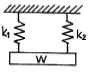
- 1.25
- 2.50
- 4.00
- 4.5
(정답률: 61%)
34. 미끄럼을 방지하기 위하여 접촉면에 치형을 붙여 맞물림에 의하여 전동하도록 조합한 벨트는?
- 평 벨트
- V 벨트
- 가는너비 V 벨트
- 타이밍 벨트
(정답률: 60%)
35. 볼나사(ball screw)의 장점에 해당되지 않는 것은?
- 미끄럼 나사보다 내충격성 및 감쇠성이 우수하다.
- 예압에 의하여 치면높이(back lash)를 작게 할 수 있다.
- 마찰이 매우 적고, 기계효율이 높다.
- 시동토크, 또는 작동 토크의 변동이 적다.
(정답률: 57%)
36. 지름 30mm인 브레이크 드럼을 가진 밴드 브레이크의 접촉길이가 706.5mm, 밴드의 폭이 20mm 일 때, 제동력 3.7KW라면 이 밴드 브레이크의 용량(brakecapacity)은 몇 N/mm2.m/S인가?
- 26.50
- 0.324
- 0.262
- 32.40
(정답률: 33%)
37. 키 재료의 허용전단응력 60N/mm2, 키의 폭×높이가 16mm×10mm인 성크키를 지름이 50mm인 축에 사용하여 250rpm으로 40KW를 전달시킬 때, 성크 키의 길이는 몇 mm이상이어야 하는가?
- 51
- 64
- 78
- 93
(정답률: 45%)
38. 6000N.m의 비틀림 모멘트만을 받는 연강재 중심축의 지름은 몇 mm 이상이어야 하는가? (단, 축의 허용전단응력은 30N/mm2로 한다.)
- 81
- 91
- 101
- 111
(정답률: 46%)
39. 미끄럼 베어링 재료에 요구되는 성질로 거리가 먼 것은?
- 하중 및 피로에 대한 충분한 강도를 가질 것
- 내부식성이 강할 것
- 유막의 형성이 용이할 것
- 열 전도율이 작을 것
(정답률: 63%)
40. 그다음 중 용접이음의 단점에 속하지 않는 것은?
- 내부결함이 생기기 쉽고 정확한 검사가 어렵다.
- 용접공의 기능에 따라 용접부의 강도가 좌우된다.
- 다른 이음작업과 비교하여 작업 공정이 많은 편이다.
- 잔류응력이 발생하기 쉬워서 이를 제거해야 하는 작업이 필요하다.
(정답률: 78%)
3과목: 컴퓨터응용가공
41. CNC 가공의 곡면상에서 옵셋된 공구의 위치를 의미하는 것은?
- CC 포인트
- CL 데이터
- CM 포인트
- 공구 경로 검증
(정답률: 65%)
42. 곡선을 표현하는 함수에 관한 설명으로 틀린 것은?
- 양함수식에서는 하나의 곡선에 대하여 하나의 곡선의 식만 존재한다.
- 다항식으로 표현된 양함수곡선식은 매개변수방정식으로 변환이 가능하다.
- 다항식 곡선함수식에서 변환된 매개변수방정식은 일반적으로 다항식이 아니다.
- 곡선식이 다항식인 경우 변환되는 동일한 곡선에 대하여 매개변수방정식은 하나뿐이다.
(정답률: 49%)
43. 모델링 기법 중에서 실루엣(silhouette)을 구할 수 없는 기법은?
- B-rep(boundary representation) 방식
- CGC(constructive solid geometry)방식
- 서피스 모델링(surface modeling)
- 와이어 프레임 모델링(wire-frame modeling)
(정답률: 78%)
44. Rapid Prototyping(RP) 공정에서 CAD 모델은 STL 파일 형식을 사용하여 표현된다. STL 파일 형식에 대한 설명중 옳은 것은?
- 물체를 삼각형들의 리스트로 표현한다.
- 솔리드 물체에 대한 위상 정보를 저장하고 있다.
- 자유곡면 표현을 위해 Bezier 곡면식을 기본적으로 지원한다.
- CAD 모델을 STL 파일 형식으로 변환시 같은 종류의 곡선 형식을 사용하므로 오차가 발생하지 않는다.
(정답률: 47%)
45. CAD 정보의 출력장치가 아닌 것은?
- 전자 펜(light pen)
- 레이저 프린터(laser printer)
- 벡터 디스플레이(vector display)
- 스테레오 리소그라피(stereo lithography)
(정답률: 78%)
46. 솔리드 모델링에 관한 설명으로 틀린 것은?
- 솔리드 모델링은 형상을 절단하여 단면도로 작성하기는 어렵지만 물리적 성질의 계산이 가능하다.
- CSG(Constructive Solid Geometry)는 단순한 형상의 조합으로 생성하는데 불리언 연산자를 사용한다.
- B-rep( boundary representation)은 형상을 구성하고 있는 정점, 면, 모서리의 관계에 따라 표현하는 방법이다.
- 솔리드 모델링은 셀 혹은 기본곡면 등의 입체요소 조합으로 쉽게 표현할 수 있다..
(정답률: 63%)
47. 여러개의 NC 공작기계를 한 대의 컴퓨터에 결합시켜 제어하는 시스템은 무엇인가?
- DNC
- ERP
- F M S
- MRP
(정답률: 84%)
48. B-spline 곡선을 정의하기 위해 필요하지 않은 입력요소는?
- 조정점
- 절점(knot) 벡터
- 곡선의 오더(order)
- 끝점에서의 접선(tangent) 벡터
(정답률: 51%)
49. NC 가공영역을 지정하는 방식 중 폐곡선 영역 외부를 일정 옵셋량을 주어 가공하는 방식은?
- Area 지정
- Island 지정
- Trimming 지정
- Blending 지정
(정답률: 73%)
50. Beizer 곡선에 대한 설명으로 틀린 것은?
- 곡선의 치수가 조정점의 계수로부터 계산된다.
- 곡선의 형상을 국부적으로 수정하기 어렵다.
- 3차 Bezier 곡선은 모든 조정점을 지난다.
- Blending 함수는 Bernstein 다항식을 채택한다.
(정답률: 54%)
51. IGES(Initial Graphics Exchanges Specification)에 관한 설명으로 옳은 것은?
- 설계, 제조, 품질보증, 시험, 유지 보수를 포함하는 제품의 전체 주기와 관련된 제품 데이터다.
- AutoCAD 도면을 다른 CAD 시스템에 전달하기 위해 개발되었다.
- IGES 파일은 일반적으로 여섯 개의 섹션으로 구성되어 있다.
- 제품데이터의 교환으로 개발되었으며 공정계획, NC 프로그래밍, 공구설계, 로봇공학 등이 포함되어 있다.
(정답률: 59%)
52. 화면의 CAD 모델표면을 현실감 있게 채색, 원근감, 음영 처리하는 작업은 무엇인가?
- Animate
- Simulation
- Modeling
- Rendering
(정답률: 77%)
53. 곡면을 평면으로 절단한 곡선을 따라 공구 경로를 산출하는 방법으로 수치적인 계산이 많이 요구되는 가공 방법은?
- Check 가공
- Cartesian 가공
- 나선형 가공
- 등매개변수 가공
(정답률: 48%)
54. 컴퓨터응용설계 및 생산/가공과 가장 관계가 적은 것은?
- CAD
- CIMS
- CAE
- CAB
(정답률: 62%)
55. CSG(constructive solid geometry) 모델링에 사용되는 프리미티브(primitive)로 적합하지 않은 것은?
- 구
- 직선
- 원통
- 사각블럭
(정답률: 75%)
56. 곡면을 변형시키지 않고 펼쳐서 평면으로 만들 수 있는 것을 전개가능곡면(developable surface)라 하는데, 다음중 전개가능곡면이 아닌 것은?
- 압연(ruled) 곡면
- 원통(cylinder) 곡면
- 쿤스(Coons) 곡면
- 선형(bilinear) 곡면
(정답률: 53%)
57. 형상 모델링에서 와이어 프레임 모델링에 대한 설명이 아닌 것은?
- 처리속도가 빠르다.
- 단면도 작성이 용이하다.
- 데이터의 구성이 간단하다.
- 모델 작성을 쉽게 할 수 있다.
(정답률: 61%)
58. 2차원 데이터 변환 행렬로서 X축에 대한 대칭의 결과를 얻기 위한 변환으로 옳은 것은?
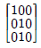
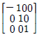
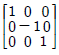
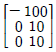
(정답률: 59%)
59. 형상 모델링과 가장 관계가 깊은 것은?
- 스위핑(sweeping)
- 만남조건(mating condition)
- 제품 구조(product structure)
- 인스턴스 정보(instancing information)
(정답률: 54%)
60. xy좌표계의 원점에서 xy평면에 수직인 직선을 z축으로 잡은 좌표계의 형식을 올바르게 표현한 것은?
- ( θ, ø , z )
- ( r , θ , z )
- ( x , y , z )
- ( r , ø , z )
(정답률: 65%)
4과목: 기계제도 및 CNC공작법
61. 그림은 어느 기어를 도시한 것인가?
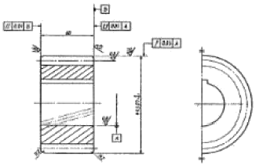
- 스퍼 기어
- 헬리컬 기어
- 직선베벨 기어
- 웜 기어
(정답률: 74%)
62. KS 재료기호 중 드로잉 용 냉간압연 강판 및 강대에 해당하는 것은?
- SCCD
- SPCC
- SPHD
- SPCD
(정답률: 57%)
63. 어떤 치수가 50
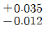
일 때 치수공차는 얼마인가?- 0.013
- 0.023
- 0.047
- 0.012
(정답률: 78%)
64. 도면과 같은 물체의 비중이 8일 때 이 물체의 질량은 몇 Kg인가?
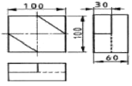
- 3.5
- 4.2
- 4.8
- 5.4
(정답률: 39%)
65. 대칭인 물체의 중심선을 기준으로 내부모양과 외부모양을 동시에 표시하여 나타내는 단면도는?
- 부분 단면도
- 한쪽 단면도
- 조합에 의한 단면도
- 회전도시 단면도
(정답률: 60%)
66. 다음과 같이 표면의 결 도시기호가 나타났을 때, 이에 대한 해석으로 틀린 것은?
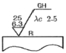
- 가공법은 연삭가공
- 컷 오프 값은 2.5mm
- 거칠기 하한은 6.3㎛
- 가공에 의한 컷의 줄무늬가 기호를 기입한 면의 중심에 대하여 거의 방사 모양
(정답률: 60%)
67. 구름 베어링의 기호 중 “NF 307” 베어링의 안지름은 몇 mm인 가?(오류 신고가 접수된 문제입니다. 반드시 정답과 해설을 확인하시기 바랍니다.)
- 7
- 10
- 30
- 35
(정답률: 67%)
68. 구멍기준식(H7) 끼워맞춤에서 조립되는 축의 끼워맞춤 공차가 다음과 같을 때 억지 끼워 맞춤에 해당되는 것은?
- p6
- h6
- g6
- f6
(정답률: 77%)
69. 다음 나사 기호 중 관용나사의 기호가 아닌 것은?
- TW
- PT
- R
- PS
(정답률: 54%)
70. 치수 보조기호의 설명으로 틀린 것은?
- R15 : 반지름 15
- t15 : 판의 두께 15
- (15) : 비례척이 아닌 치수 15
- SR15 : 구의 반지름 15
(정답률: 82%)
71. CNC 프로그램의 구성에 관한 설명으로 틀린 것은?
- 일련의 블록(block)으로 구성된다.
- 한 블록은 몇 개의 워드(word)로 구성된다.
- 워드는 주소(adrdess)와 수치로 구성된다.
- 블록과 블록은 E0B로 구분되며, 기호는 “:” 또는 “/”로 표시된다.
(정답률: 76%)
72. 1500rpm 으로 회전하는 스핀들에서 3회전 휴지를 주려고 한다면 정지시간은 얼마인가?
- 0.01초
- 0.12초
- 1.2초
- 12초
(정답률: 59%)
73. 머시닝센터 프로그램에서 각 주소 (address)와 그 기능이 틀린 것은?
- G : 보조기능
- L : 반복횟수
- X,Y,Z : 좌표어
- N : 전개(sequence)번호
(정답률: 68%)
74. 다음 머시닝센터 프로그램에서 N⑤ 블록의 가공시간(min)은 약 얼마인가?
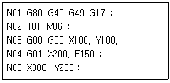
- 0.94
- 1.49
- 2.35
- 3.72
(정답률: 30%)
75. 다음과 같은 ISO 선삭용 인서트의 형번 표기법(ISO)에서 노즈(nose) “R”의 크기는 얼마인가?
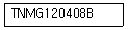
- 1R
- 2R
- 0.2R
- 0.8R
(정답률: 71%)
76. 머시닝센터에서 스핀들 알람(Spindle Alarm)의 일반적인 원인과 가장 관련이 적은 것은?
- 공기압 부족
- 주축 모터의 과열
- 주축 모터의 과부하
- 주축 모터에 과전류 공급
(정답률: 74%)
77. 머시닝센터에서 G21 지령시 축의 이동단위로 옳은 것은?
- deg
- inch
- mm
- del
(정답률: 73%)
78. 와이어 컷 방전가공에서 세컨드 컷(Second cut)을 실시함으로써 얻을 수 있는 주된 효과는?
- 와이어를 절약할 수 있다.
- 가공속도를 조절할 수 있다.
- 다이형상의 돌기부분을 제거할 수 있다.
- 이온교환수지의 수명을 연장한다.
(정답률: 80%)
79. 보간연산 방식 중 X방향, Y방향으로 움직임을 한정하여 단계적으로 곡선의 좌우를 차례차례 움직여 접근하는 방식은?
- MIT 방식
- 대수연산 방식
- DDA방식
- 최소편차 방식
(정답률: 52%)
80. CNC 공작기계에서 백래시를 줄이고, 운동저항을 작게하기 위하여 사용되는 요소는?
- 리졸버
- 볼스크류
- 서보모터
- 컨트롤로
(정답률: 76%)